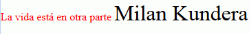
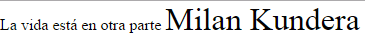
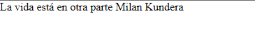

CSS en XML
Listas ordenadas
Firefox no aumenta los contadores al mostrar elementos como listas ordenadas, pero Internet Explorer y Chrome lo hacen correctamente.
XML / CSS
Resultado
Enlace
<?xml version="1.0" encoding="UTF-8"?>
<?xml-stylesheet href="ejemplo-dif-nav-01.css" title="Estilo"?>
<listas>
<lista>
<elemento>Ejemplo</elemento>
<elemento>Ejemplo</elemento>
<elemento>Ejemplo</elemento>
</lista>
<lista>
<elemento>Ejemplo</elemento>
<elemento>Ejemplo</elemento>
<elemento>Ejemplo</elemento>
</lista>l
</listas>
lista {
display: block;
margin-bottom: 10px;
}
elemento {
display: list-item;
list-style: decimal inside;
margin-left: 20px;
}
Los atributos class e id
Los navegadores Firefox, Google Chrome e Internet Explorer se comportan cada uno de una manera cuando un documento XML incluye atributos class e id y la hoja de estilo hace referencia a ellos mediante los selectores almohadilla y punto, como muestra el ejemplo siguiente:
Nota: No sé si está definido en alguna recomendación que es lo que tendrían que hacer los navegadores en este caso.
XML
CSS
Resultado
Enlace
<?xml version="1.0" encoding="UTF-8"?>
<?xml-stylesheet href="ejemplo.css"?>
<libro>
<titulo class="color">La vida está en otra parte</titulo>
<autor id="grande">Milan Kundera</autor>
<fechaPublicacion año="1973"/>
</libro>
.color {
color: red;
}
#grande {
font-size: 200%;
}
Firefox

Google Chrome

Internet Explorer
